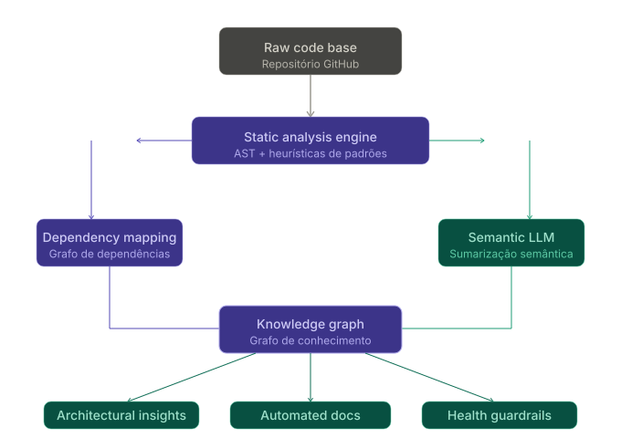

Introdução: A Era da Inteligência de Software
Branchy.io: Decifrando o Grafo de Conhecimento do seu Sistema.
Na vanguarda da engenharia moderna, o software deixou de ser apenas um conjunto de instruções para se tornar um ecossistema vivo de alta complexidade. No entanto, essa evolução trouxe consigo o fenômeno da Entropia Sistêmica: a medida da desordem e perda de informação que ocorre inevitavelmente à medida que um projeto escala.
O Branchy.io surge como a camada definitiva de Observabilidade Arquitetural. Não somos apenas uma ferramenta de análise; somos uma infraestrutura de inteligência que mapeia o "Grafo de Conhecimento" da sua empresa, garantindo que o valor intelectual investido em cada linha de código seja preservado, compreendido e escalável.
A Visão "Software-as-Knowledge"
Acreditamos que todo repositório de código esconde uma arquitetura implícita que é frequentemente nublada pela implementação técnica. O Branchy utiliza algoritmos de inteligência artificial de fronteira para realizar a engenharia reversa dessa lógica, transformando dados brutos em ativos de decisão estratégica.
O Fluxo da Inteligência Branchy

Nosso Compromisso com a Engenharia
Nossa missão é erradicar a obsolescência de conhecimento técnico. Em um mundo onde o "ônus cognitivo" é o principal gargalo da produtividade, o Branchy atua como um sistema imunológico, detectando inconsistências arquiteturais antes que elas se tornem falhas catastróficas. Elevamos a legibilidade do código ao patamar de Infraestrutura Crítica, permitindo que times naveguem por oceanos de complexidade com a clareza de um mapa em tempo real.
O Problema: A Crise da Invisibilidade Técnica
"A maior ameaça à sustentabilidade de um software não é a falta de features, mas o colapso da sua compreensibilidade."
À medida que as organizações escalam, elas enfrentam uma barreira de produtividade conhecida como Paredão da Complexidade. Este fenômeno é alimentado por três falhas sistêmicas que o Branchy.io foi projetado para mitigar:
1. Erosão do Contexto e "Bus Factor"
O conhecimento arquitetural tende a vazar do sistema para a memória humana. Quando o conteúdo semântico do código reside apenas nas "cabeças das pessoas", a organização fica vulnerável. Um Bus Factor baixo em módulos críticos representa um risco operacional sistêmico que as ferramentas de CI/CD tradicionais não conseguem detectar.
2. Deriva Arquitetural (Architectural Drift)
Existe uma divergência inevitável entre a "Arquitetura Documentada" e a "Arquitetura Implementada". Sem uma auditoria contínua, o sistema sofre de deriva: dependências circulares ocultas, acoplamento parasitário e violações de padrões de projeto que degradam a manutenibilidade a longo prazo.
3. O Impacto Econômico do Débito Cognitivo
O custo de uma feature não é apenas o tempo de escrita, mas o tempo necessário para entender onde e como ela deve ser inserida. O Débito Cognitivo atua como uma taxa de juros composta sobre o Time-to-Market.
O Ciclo de Decaimento do Sistema
graph TD
A["Entrega Acelerada de Features"] --> B["Acúmulo de Débito Técnico"]
B --> C["Aumento da Complexidade Oculta"]
C --> D["Erosão da Legibilidade"]
D --> E["Queda na Velocidade de Engenharia"]
E --> F["Perda de Conhecimento (Turnover)"]
F --> A
style F fill:#f96,stroke:#333
style C fill:#f66,stroke:#333
Consequências Estatísticas
- 30% a 50% do tempo de um desenvolvedor é gasto tentando entender o código existente.
- 70% do custo total de propriedade (TCO) de um software é alocado na fase de manutenção.
- A falha em gerir a visibilidade do código resulta em uma perda de agilidade de 15% a 20% ao ano de forma cumulativa.
Proposta de Valor: Engenharia de Visibilidade Superior
O Branchy.io não é apenas uma camada de documentação; é um motor de renderização semântica que transforma o código-fonte em um ativo estratégico de alta fidelidade. Estruturamos nossa proposta de valor em três pilares de engenharia avançada:
1. Ontologia de Código (Code-as-Graph)
Diferente das ferramentas que listam arquivos, o Branchy reconstrói a Ontologia do seu sistema. Utilizamos algoritmos de análise estática recursiva para mapear cada dependência em um Grafo de Conhecimento multidimensional.
- Detecção de Dependências Circulares: Identificação matemática de ciclos que comprometem a modularidade.
- Mapeamento de Impacto: Visualização em tempo real de como uma alteração em um módulo "core" reverbera em toda a periferia do sistema.
2. Sintetização Semântica via IA (Augmented Intelligence)
Nossa camada de IA atua como um tradutor de alta abstração. Ela processa o código para gerar modelos mentais simplificados, adequados para diferentes níveis de decisão.
- Heurísticas Arquiteturais: Avaliação automática se a implementação segue padrões (ex: Clean Architecture, Hexagonal).
- Onboarding Cognitivo: Geração de "narrativas de código" que explicam o fluxo de dados em linguagem natural altamente técnica.
3. Governança Arquitetural Automatizada
Transformamos a "Saúde do Código" de um conceito subjetivo em uma métrica objetiva e quantitativa.
- Compliance de Estrutura: Garantia de que novas funcionalidades não quebrem a integridade do design sistêmico.
- Auditoria de "Dead Code" e Sombras: Limpeza contínua de lógica zumbi que sobrecarrega a infraestrutura e a mente dos desenvolvedores.
Hierarquia de Valor do Branchy
graph TD
A["Infraestrutura de Inteligência"] --> B["Inteligência Operacional"]
A --> C["Inteligência Arquitetural"]
B --> D["Redução de Context Switch"]
B --> E["Onboarding Acelerado"]
C --> F["Mitigação de Riscos Críticos"]
C --> G["Decisões de Design Baseadas em Dados"]
D --> H["MAIOR VELOCIDADE DE ENTREGA"]
F --> I["SISTEMA ROBUSTO E ESCALÁVEL"]
KPIs Impactados
- MTTR (Mean Time To Repair): Redução drástica através da localização imediata de contexto.
- Engineering Velocity: Incremento real através da redução de impedância cognitiva.
- Knowledge Retention: Preservação do histórico técnico independentemente da rotatividade do time.
Alinhamento Estratégico: Target de Audiência
O Branchy.io é uma ferramenta transversal que atende desde o "chão de fábrica" da engenharia até o C-Level e investidores externos. Projetamos a plataforma para fornecer diferentes lentes de visibilidade para diferentes necessidades de negócio.
Engineering Leadership
(CTOs, VPs de Eng, Staff Engineers)
O Branchy atua como o Painel de Controle da Engenharia.
- Gestão de Ativos: Visibilidade sobre portfólio de repositórios legados e novos.
- Prevenção de Burnout: Redução da carga cognitiva sobre os desenvolvedores seniores.
Produto & Stakeholders
- Roadmap de Saúde: Entenda atrasos devidos à complexidade do código base.
- Visibilidade de Dependências: Compreensão das limitações técnicas no produto.
Compliance & Segurança
- Análise Arquitetural: Detecção de vazamentos de lógica e falhas de design.
- ISO/SOC2 Readiness: Documentação automática de fluxos de dados.
VCs & M&A
- Due Diligence Técnica: Avaliação instantânea da qualidade do código base.
- Avaliação de Risco: Identificação de arquiteturas insustentáveis antes de investimentos.
Arquitetura Tecnológica: O Motor de Inteligência
A infraestrutura do Branchy.io foi desenhada para alta performance, escalabilidade horizontal e processamento assíncrono de grafos de alta densidade.
1. Engine de Análise Estática (Frontend-Driven)
Utilizamos uma abordagem de Browser-Level Analysis para garantir privacidade e velocidade.
- Abstract Syntax Trees (AST): Embora simplificada nesta versão, a engine mapeia recursivamente a árvore de arquivos para reconstruir o grafo de dependências via API do GitHub.
- Heurística de Padrões: Algoritmos customizados para detecção de estruturas de diretório e inferência de tipos de módulos (Core, Service, Utility).
2. Camada de Inteligência Artificial (LLM Integration)
Nossa integração com LLMs (Claude 4.6 Sonnet / Gemini 3.1 Pro) utiliza estratégias avançadas de Context Windows.
- Sumarização Semântica: Em vez de enviar o código bruto integral, enviamos metadados estruturados e trechos críticos (README, package.json, controllers) para otimização de tokens e precisão analítica.
- Synthesized Onboarding: A IA gera guias em Markdown enriquecidos com sintaxe Mermaid, baseada nas descobertas da engine de análise estática.
3. Stack de Desenvolvimento (Technical Stack)

Detalhes de Implementação:
- Linguagem: TypeScript 5.x
- Persistência: Supabase Realtime
- Segurança: OAuth2 GitHub
- Visualização: Custom SVG & Mermaid.js
Health Score Methodology:
- Densidade de Complexidade
- Dependências Circulares
- Detecção de Dead Code
- README Coverage